Khi tới bờ biển bắc Đà Nẵng, nước biển trong vắt, không có sóng xô bờ, xung quanh tĩnh lặng với những hàng dương xanh rì, Wayne Karlin đi xuống mép nước, tất cả yên lặng đứng quanh. Anh xúc động, chậm rãi nói:
☆
“Các em ạ! Nơi đây, chỗ chúng ta đang đứng đây chính là điểm khởi đầu tấn bi kịch lớn trong lịch sử nước Mỹ, ngày 8-3-1965 quân đội Mỹ lần đầu tiên đã đổ bộ vào Việt Nam. Tại đây!”
☆
...Năm ấy công ty BHD thực hiện bộ phim truyện nhựa có tên “Vũ Khúc Con Cò”. Có thể đây là dấu ấn quan trọng đầu tiên của BHD trong việc đầu tư vào làm phim. Chủ nhân của công ty này là vợ chồng cháu Bình, “Bình Boong” con trai mẹ Hảo, Phan Thanh Hảo, bạn tôi từ thuở hàn vi, thuở “Hà Nội Trong Mắt Ai” long đong lận đận. Vợ Bình Boong là cháu Hạnh, Ngô Bích Hạnh, con bố Ngô Thảo, cũng là chỗ thân quen bạn bè. Tôi biết các cháu từ khi chúng còn nhỏ và thầm khâm phục các cháu vì bản lĩnh và những bước đi vào đời có thể nói là ngoạn mục của chúng.
Khi “Vũ Khúc Con Cò” đã hoàn thành, tôi cũng không hề biết về bộ phim. Bỗng một hôm Bình đến nhà tôi bàn chuyện sửa phim, cháu nói rằng phim chúng cháu đã làm xong nhưng có điều lấn cấn là vai phóng viên chiến tranh dẫn chuyện trẻ quá (vai này do cháu Lưu Vinh em Lưu Hà, con anh Lưu Xuân Thư đóng). Bình bảo rằng mẹ cháu và bố Ngô Thảo gợi ý nên mời chú Thủy vào vai này thì hợp hơn. Chú có tuổi và thực sự chú đã là phóng viên chiến trường nhiều năm...
Tôi nhận lời với các cháu theo kiểu vui đâu chầu đấy và không bao giờ nghĩ rằng nhờ các cháu, do các cháu mà tôi có một người bạn Mỹ rất chân tình, giản dị là Wayne Karlin.
Tôi nói với các cháu rằng: Chú là người cả đời làm phim tài liệu, không có tài hư cấu bịa chuyện như những nhà làm phim truyện. Vậy cho phép chú, trong lời thoại, chú chỉ nói những chuyện thật, những trải nghiệm thật của chú trong chiến tranh mà không theo một kịch bản nào cả. Ngoài ra nếu có thể được, nhân vật cựu binh Mỹ đối thoại với chú nên là một xạ thủ súng máy trên trực thăng. Cháu nên biết rằng ở chiến trường miền Nam hồi đó, chú sợ trực thăng nhất. Bộ binh, B52, B57, pháo bầy...chú không sợ. Chú sợ trực thăng vì nó có thể hạ sát mình trong nháy mắt, ở bất kỳ đâu. Nó đuổi rượt mình như mèo vờn chuột và cái chết ập đến một cách tức tưởi.
Bình - Hạnh OK! Chỉ mấy ngày sau tôi được các cháu mời đến nhà, ở đầu phố Lê Ngọc Hân để gặp “bạn diễn” của tôi. Tôi thực sự kinh ngạc chứ không phải là ngạc nhiên nữa! Trước mắt tôi là một cựu binh Mỹ cao nghều, hiền lành. Lúc đầu anh ta có vẻ hơi mặc cảm, từng là xạ thủ súng máy trên trực thăng, có mặt ở chiến trường ở miền Nam Việt Nam hầu như cùng thời điểm và địa điểm với tôi. Anh ta tên là Wayne Karlin.
Kỳ lạ lắm chứ! Một bộ phim do tư nhân đứng ra sản xuất mà chỉ mất có mấy ngày để điều một “diễn viên” có một lai lịch chính xác như thế từ Mỹ, đúng hơn là từ Maryland, bờ Đông nước Mỹ sang Việt Nam. Điều đó hãng phim nhà nước chẳng bao giờ làm được!
Wayne, Bình, Hạnh, Phan Thanh Hảo và tôi chuyện trò khá lâu. Ngày hôm sau khi ra hiện trường, dưới gốc đa, trên đường làng hay trên con đê ngày mùa, bên những người nông dân gặt lúa, quạt thóc, phơi rơm. Chúng tôi lững thững đi trong khung cảnh ấy và chỉ nói với nhau những chuyện thật cái thời mỗi người một chiến tuyến. Tôi cũng chẳng ngại ngùng gì khi tôi kể rằng, tôi sợ và căm ghét cái trực thăng của Wayne như thế nào. Còn Wayne cũng thú thật rằng từ trên cao anh ta bắn vào tất cả những gì đang động đậy dưới đất...
Sau này, năm 2002 tôi qua Mỹ, cùng Wayne và bạn bè làm một cuốn sách, trong đó Wayne nói lại nguyên xi câu vừa rồi và còn thêm một đoạn: “...Khi tôi gặp anh (Trần Văn Thủy) ở Việt Nam và anh tâm sự với tôi là hồi đó anh sợ máy bay trực thăng như thế nào, tôi có cảm giác vừa kinh hoàng vừa đau buồn vì tôi biết rằng nếu hồi đó tôi thấy anh chạy dưới đất, tôi sẽ bắn chết anh một cách không thương tiếc, và giả sử tôi đã làm như vậy thì nhân loại sẽ bị thiệt thòi, mất mát biết bao... ” (Nếu Đi Hết Biển, - cuốn tái bản 2004. Trang 157. NXB Thời Văn California)
Trong những lần trở lại Mỹ sau này, tôi và Wayne có nhiều kỉ niệm. Anh ta mời tôi đến nói chuyện với sinh viên trường anh dạy, trường Saint Mary ở gần Washington DC. Wayne là giáo sư ngôn ngữ và văn chương, là tác giả của bốn tiểu thuyết đoạt những giải danh giá của nước Mỹ. Có một điều tôi nhận thấy là, ở Mỹ, nhiều cựu binh từ Việt Nam trở về, cũng như Wayne, đều tiếp tục học hành, nghiên cứu và thành đạt trong các lĩnh vực khoa học, văn học nghệ thuật chính trị, xã hội và kinh doanh, nhiều người trở thành những chính khách xuất chúng, là những thống đốc, nghị sĩ, ứng cử viên tổng thống...
Khi tham chiến và bị bắt ở Việt Nam, họ chỉ là những người lính quèn hoặc “giặc lái”...
Tôi liên tưởng đến Việt Nam thấy nhiều điều tương tự. Sau khi phục viên, các cựu chiến binh nói chung đều vất vả cơ cực trong việc mưu sinh kiếm sống nhưng có không ít người vươn lên thành đạt trong nhiều lĩnh vực trong hoạt động xã hội.
Vì cũng đã là cựu binh tham chiến ở Việt Nam lại là một nhà văn, Wayne có những trải nghiệm và cái nhìn sâu sắc khi viết văn và giảng dạy. Anh ta đã cùng tôi và hai người Mỹ đưa 17 sinh viên Mỹ ở khoa đạo diễn phim tài liệu, trường Đại học Điện ảnh New York sang thực tập ở Việt Nam. Các em là người Mỹ nhưng có nguồn gốc khác nhau; da trắng, da đen, da vàng, có 3 em gốc Việt. Họ vào Việt Nam từ cửa khẩu Nội Bài. Đêm đầu tất cả tập trung lên Sóc Sơn, đốt lửa trại rồi về Hà Nội thăm Văn Miếu và các bảo tàng. Tiếp đó là cả một cuộc đi xuyên Việt kỳ thú đối với các em. Các em được trang bị 4 camera với các thiết bị làm phim chuyên nghiệp. Cái đích là khi trở về Mỹ, các em phải hoàn thành 4 bộ phim tài liệu về đề tài Việt Nam.
Wayne là người thuộc lòng các sự tích chiến tranh Việt Nam. Bộ nhớ của anh thật tuyệt vời. Anh đã giảng giải cho các em khi đoàn đặt chân đến các địa danh nổi tiếng miền Trung: Sông Bến Hải, Cồn Tiên, Dốc Miếu, Khe Sanh, Tà Cơn, Gio Linh, Cửa Việt... Các sinh viên Mỹ đã có những trải nghiệm quan trọng, không thể quên trong đầu óc ngây thơ của các em.
Wayne “mê tín” sự dẫn giải của tôi với sinh viên, không hẳn vì tôi đã trải qua chiến tranh, sống sót sau chiến tranh, cũng không hẳn vì tôi là đạo diễn phim tài liệu đoạt nhiều giải thưởng Quốc tế. Có lẽ Wayne cần tôi trong chuyến đi đó chỉ đơn giản vì anh quí tôi, vì thiếu chút nữa thì Wayne đã hạ sát tôi bằng họng súng của chính anh trên máy bay trực thăng ngày đó.
Khi tới bờ biển Bắc Đà Nẵng, nước biển trong vắt, không có sóng xô bờ, xung quanh tĩnh lặng với những hàng dương xanh rì, Wayne đi xuống mép nước, tất cả yên lặng đứng quanh. Anh xúc động, nói chậm rãi:
- Các em ạ! Nơi đây, chỗ chúng ta đang đứng đây chính là điểm khởi đầu tấn bi kịch lớn trong lịch sử nước Mỹ, ngày 8-3-1965 quân đội Mỹ lần đầu tiên đã đổ bộ vào Việt Nam. Tại đây!
Wayne ơi! Anh là một người rất tế nhị. Anh chỉ nói: “ Chỗ chúng ta đang đứng... .” Còn tôi có thể “sòng phẳng” hơn: “ Nơi đây cũng là điểm khởi đầu một bi kịch lớn của người Việt Nam ”.
Tôi đề nghị đưa các em đến di tích Mỹ Lai sau khi đã mời các em xem “Tiếng Vĩ Cầm Ở Mỹ Lai”.
Quả là bộ phim đoạt giải vàng Liên hoan phim châu Á Thái Bình Dương đó và những hình ảnh, di vật ở Mỹ Lai đã gây sốc cho các em ngoài sức tưởng tượng của Wayne và tôi. Nhiều em khóc tức tưởi rất tội nghiệp.
Tôi thương chúng, thương cả Mike Boehm bị quá khứ bám đuổi và hành hạ một các tàn nhẫn như thế.
Chúng tôi còn đưa các em đi nhiều nơi, chúng ghi lại nhiều hình ảnh, nhiều câu chuyện một cách cẩn mực và tôi luôn nói với chúng rằng: “Tốt nhất là khi bấm máy, các em phải hình dung được sẽ dựng cảnh này vào trường đoạn nào, cảnh trước và cảnh sau đó là gì.”
Đêm cuối cùng chúng tôi tổ chức một bữa tiệc ở khách sạn New World, Sài Gòn. Một cuộc chia tay thật bịn rịn.
Khi tàn tiệc, có người bảo nên cho các em tự do ra phố, nhưng tôi đề nghị tất cả lên lầu trên, chia thành 4 nhóm, mỗi nhóm một camera. Các em tâm sự những suy nghĩ về chuyến đi Việt Nam vừa qua. Quay cận cảnh, ghi hình và tiếng từng người một. Tôi không thể tưởng tượng được những gì đã xảy ra, những gì các em đã nói. Chúng ta đều biết người Âu Mỹ, dù già hay trẻ, trước ống kính đều tự tin, tự nhiên và thẳng thắn. Các em cũng thế. Các em đã nói ra những cảm nghĩ trước và sau khi đặt chân đến Việt Nam, những ý nghĩ hết sức chân thành, xúc động. Có em vừa nói vừa khóc, người đứng bên cũng khóc, bản thân em bấm máy cũng khóc. Wayne ghé tai tôi: “ Không có nhà văn nào có thể nói ra được những điều thật, chính xác và xúc động lòng người đến như thế .”
Tôi nói với các em rằng: “Buổi tối hôm nay các em đã làm được một việc rất tuyệt vời, rất quan trọng khi nói những suy nghĩ của mình về chiến tranh, về ‘Vietnam War’ trước và sau khi đến Việt Nam. Là những người đang học để làm nghề, chắc chắn các em phải hiểu được rằng, nhiều giờ băng của 4 camera vừa ghi hình có thể là những ý, những lời mở đầu, lời kết thúc phim và cũng có thể là lời dẫn trong phim. Không một nhà văn nào kể cả Wayne, thầy của các em có thể viết hay hơn thế . ”
Các em rất yêu quí tôi, có em nhận tôi là bố. Trước khi chia tay nhiều em đã ôm tôi khóc nức nở và để lại những lưu bút rất tình nghĩa...
Còn Wayne, trước khi lên máy bay anh tặng tôi chiếc áo thun dầy có thêu dòng chữ “College of Southern Maryland GSM 1958” - kỷ niệm trường Saint Mary ở Maryland. Đó là ngôi trường của anh và là nơi tôi đã tới thăm. Wayne còn tặng tôi một bức ảnh.
Tôi nói qua về kỉ vật này. Đó là bức ảnh đen trắng đóng khung gỗ cỡ 20x16. Trong ảnh là Wayne thời còn trẻ trên trực thăng, mặc quân phục, đội mũ bay, tay cầm khẩu súng máy cực nhanh. Một bức ảnh chiến tranh, chết chóc thời hai đứa còn ở hai chiến tuyến cùng thời điểm cùng chiến trường như vậy, tặng nhau sao được! Không nên tặng nhau để gợi lại kỉ niệm đau buồn như thế, không thể tặng nhau được! Nhưng Wayne đã tặng tôi bức ảnh đó. Tôi cầm bức ảnh và thực sự xúc động với lời đề tặng:
For anh Tran Van Thuy. I’m glad I met you now, and not when this photo was taken.
hòa binh your brother. Wayne Karlin
(Tặng anh Trần Văn Thủy. Tôi mừng vì tôi gặp anh bây giờ chứ không phải khi chụp tấm ảnh này.
hòa bình người anh em của anh. Wayne Karlin)
Chữ “anh” viết bằng tiếng Việt và dùng lẫn với chữ brother... Nên hiểu rằng Wayne rất nhạy cảm với tiếng Việt...
Thật tuyệt vời phải không?
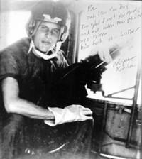
Wayne Karlin trên máy bay trực thăng...
☆
Là người làm phim tài liệu, tôi hiểu rằng không có hình ảnh nào là “ không được phép dùng ”, vấn đề là ở chỗ dùng nó với lời lẽ gì, ý tứ gì mà thôi.
Một lời đề tặng hay như thế chỉ có thể do một nhà văn chân chính như Wayne viết ra.
☆
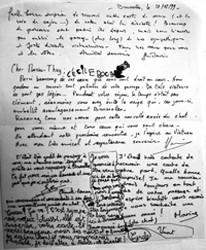
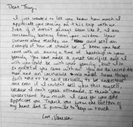
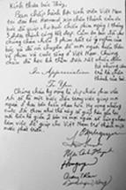
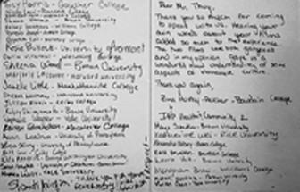
Lưu bút của các sinh viên Mỹ và châu Âu...
Tôi muốn nói đôi lời về khán giả Mỹ và đặc biệt là những sinh viên Mỹ mà tôi đã gặp. Tới Mỹ nhiều lần, ngoài những công việc chính như viết về cộng đồng người Việt ở Mỹ theo lời mời của JWC Massachusset, tham dự các Liên hoan phim New York, Florida, Madison, Brooklyn; tham dự hội thảo của những nhà làm phim độc lập The Robert Flaherty, tham dự hội thảo về xã hội học ở Đại học New York, hội thảo về chất độc da cam ở Riverside, California...
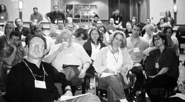
Với sinh viên các trường Đại học Mỹ sang thực tập tại Việt Nam
Gần trăm buổi nói chuyện, giao lưu chiếu phim ở trên ba mươi Đại học khắp bờ Đông, bờ Tây nước Mỹ là những việc chiếm của tôi nhiều thì giờ nhất. Có nơi một hai buổi, có nơi cả tuần lễ. Nơi đông người dự, có đến bốn năm trăm người; nơi ít hơn, quãng hai trăm người.
☆
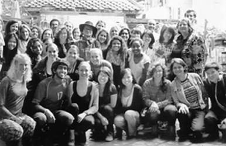
Với sinh viên các trường Đại học Mỹ sang thực tập tại Việt Nam
Như vậy tôi đã may mắn được tiếp xúc với hàng chục ngàn sinh viên Mỹ, hàng ngàn cựu chiến binh, trí thức Mỹ. Có thể nói, ở Mỹ mỗi trường Đại học là một thế giới riêng. Tôi ấn tượng với nền giáo dục Mỹ, hệ thống Đại học Mỹ về nhiều phương diện mà lẽ ra tôi phải viết riêng về đề tài có ích này.
Như trên đã nói tôi thấy sinh viên Mỹ với bản lĩnh và tính cách của họ được hình thành từ nhiều thế hệ là hạt nhân quan trọng nhất của nền giáo dục Mỹ.
☆
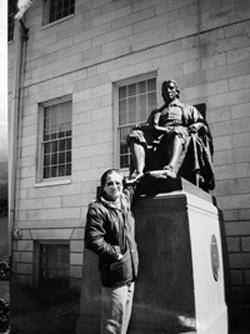
Harvard – một trong những trường đại học đào tạo ra “những người cai trị thế giới”.
Ở Việt Nam, nhiều người và nhiều lần đã bàn về Cải cách giáo dục. Tất cả những gì người ta đưa ra đều cần và có lý nhưng cái cốt lõi nhất của giáo dục là con người, là bản lĩnh, là năng lực của sinh viên. Có nghĩa là cải cách giáo dục phải bắt đầu từ tất cả mọi phương diện nhưng cần nhất là Bản lĩnh và Tố chất của sinh viên. Điều này không phải một lúc mà có được.
Các em rất hào hứng đặt câu hỏi và trao đổi với tôi kể cả những chuyện xa lắc xa lơ, thí dụ như: Bộ Luật Hồng Đức thế kỷ thứ 15 dưới thời trị vì của Vua Lê Thánh Tông có được coi trọng ở Việt Nam hay không? Cải cách ruộng đất ở Việt Nam có phải là “Chuyện Tử Tế” hay không? Ông Bush và Đảng Cộng hòa chủ trương tấn công vào Iraq đúng sai ở chỗ nào? Tại sao vụ thảm sát Mỹ Lai được làm thành phim trong khi vụ thảm sát ở Huế hồi Mậu Thân 1968 thì không? Người Việt Nam có tính thù dai hay không? Xã hội Việt Nam bây giờ dân chủ hơn hay chế độ Việt Nam Cộng hòa trước đây dân chủ hơn?...
Trước những con người năng động lại có tri thức, có nền tảng giáo dục cơ bản, sự đối đáp phải nghiêm túc, sắc bén, thẳng thắn, đi vào vấn đề họ hỏi với sự trọng thị. Nếu không chỉ làm mất thì giờ và không thể chiếm được cảm tình và sự tôn trọng của cử tọa.
Các em sinh viên gốc Việt ở Harvard cũng dành cho tôi những tình cảm nồng hậu. Tôi rất vui về điều này và tôi xin được nói lời cám ơn chân thành tới các em.
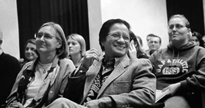
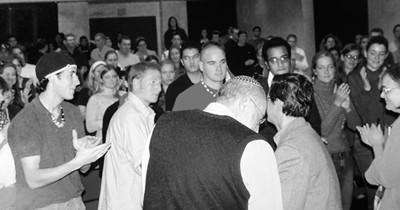
Không khí nồng nhiệt trong buổi giao lưu với các giáo sư và sinh viên khoa Thần học tại Đại học Santa Barbara, California
Có lúc tôi nghĩ lẩn thẩn, vài ba chục năm nữa, vào giữa thế kỉ 21 này, các em trở thành những nhà khoa học, những chính khách, những người thành đạt hoặc là công dân bình thường của nước Mỹ và trong hàng chục ngàn em mà tôi đã gặp, đã nói chuyện, đã tranh luận, đã lưu luyến, quí mến nhau sẽ có vài ba em còn nhớ đến ngày xưa, có một người Việt Nam mà mình đã thích thú khi còn là sinh viên. Riêng điều ấy cũng đã là một ân huệ lớn cuộc đời ban cho tôi.
☆
...Phòng khách nhà Thủy, trên tường, ở một vị trí khiêm tốn, ít người để ý, có một văn bản lồng kính sang trọng.
Tôi đọc:
International Film Seminars The 49 th Robert Flaherty Film Seminar “Witneesing the World” Special Feature Guest Tran Van Thuy - Vassar College PoughKeepsie, NY. USA- June 14-20-2003.
(Hội thảo Điện ảnh Quốc tế lần thứ 49 The Robert Flaherty - New York tháng 6 năm 2003 khách mời đặc biệt Trần Văn Thủy “Witneesing the World”)
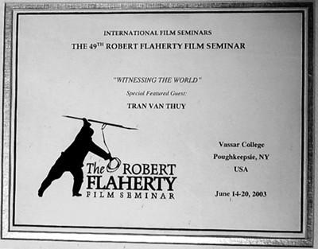
“Witneesing the World” trong tiếng ta là thế nào đây? Tôi nghĩ, hai từ đó không nên hiểu là “chứng nhân” và “thế giới”, vừa to tát vừa không thật đúng. Tôi xin mạn phép tạm gọi là: “ Chứng kiến Thế gian” ; có gì đó gần gũi, và sát nghĩa hơn. Nếu sai xin được thứ lỗi và chỉ bảo.
☆